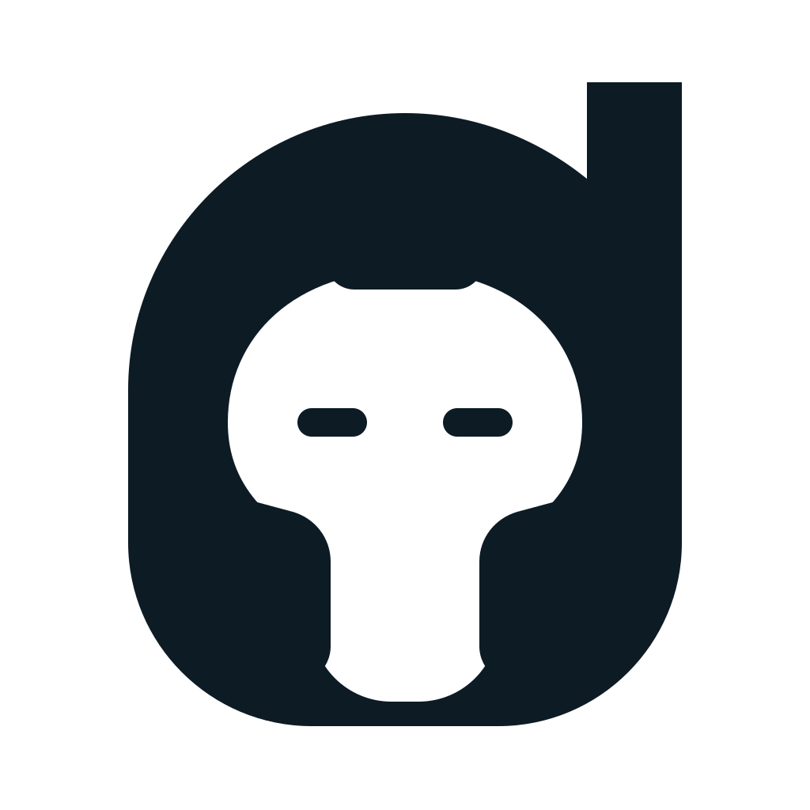

One command deck. Every coding agent.
Nauclio brand system · v1.0
Command every coding agent.
One calm command deck for every harness, shell, machine, and device. Nauclio keeps the human at the helm while the agent fleet gets the work done.
Logo system
Three sessions. One helm.
The mark combines three terminal sessions with a three-spoke command wheel. It represents multiple agent harnesses coordinated from one human-controlled interface.


Color
Aegean signal on abyss.
Navy conveys persistent infrastructure; cobalt communicates control; cyan and seafoam indicate live agents, connections, and successful execution.
Abyss
#071426Deep Current
#0B1F3ACobalt
#2563EBAegean
#22D3EESeafoam
#5EEAD4Foam
#F7FAFCTypography
Technical without becoming mechanical.
Sora · Display
Stay at the helm.
Inter · Interface
Built for long sessions, dense state, and fast scanning. Inter handles the product interface and all explanatory copy.
$ nauclio run --fleet active
Interface direction
Quiet surfaces. Visible state.
The interface should feel calm when ten agents are busy. Reserve cyan and seafoam for live state, focus, and successful execution—not decoration.
Controls
Fourteen-pixel corners, direct verbs, and a clear primary action.
● codex-03 running
↳ workspace synced across 3 devices
› awaiting review at command deck
Messaging